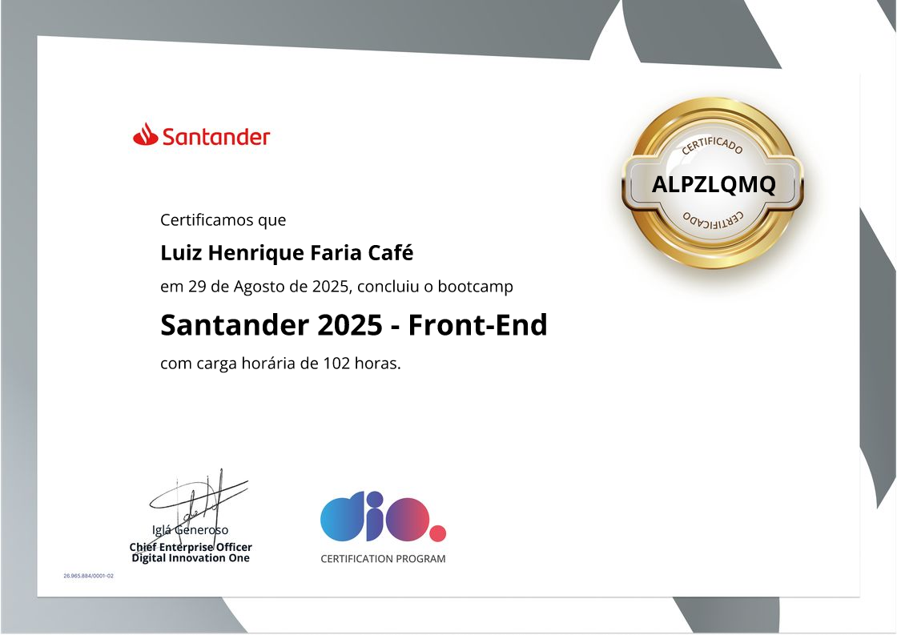
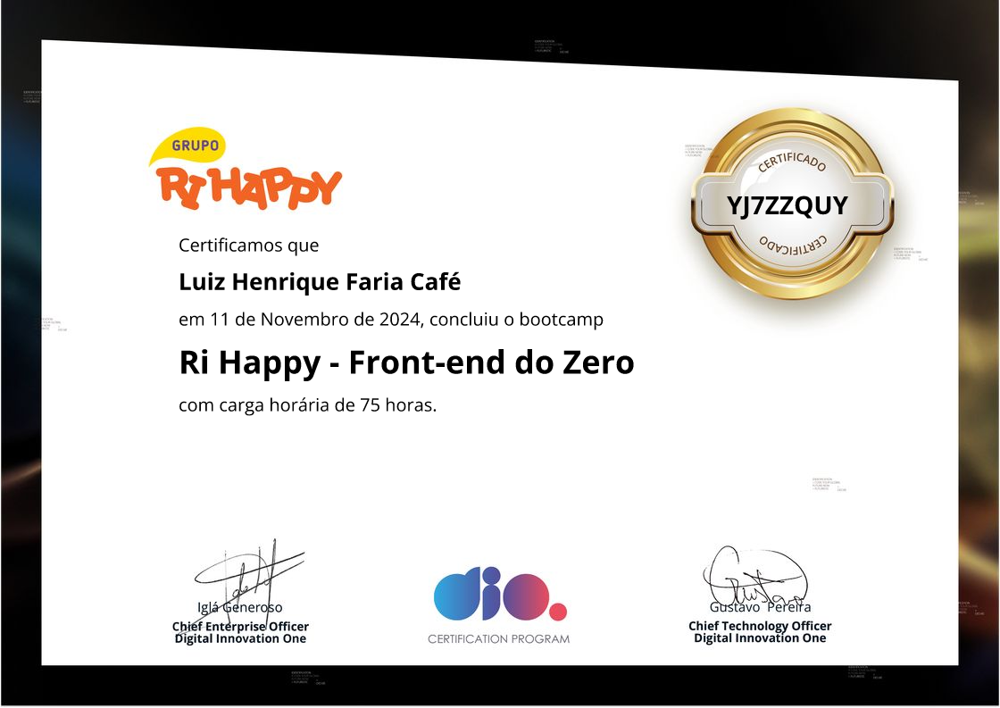

Olá! Meu nome é Luiz Henrique. Sou um Tech Recruiter em transição de carreira para o universo Front-End. Sou apaixonado por tecnologia e programação. Tenho experiência em desenvolvimento web, especialmente com HTML, CSS e JavaScript, com projetos pessoais. Estou sempre em busca de novos desafios e aprendizados para aprimorar minhas habilidades e criar soluções inovadoras.
Neste portfólio, você encontrará alguns dos meus projetos e um pouco mais sobre minha trajetória profissional.

